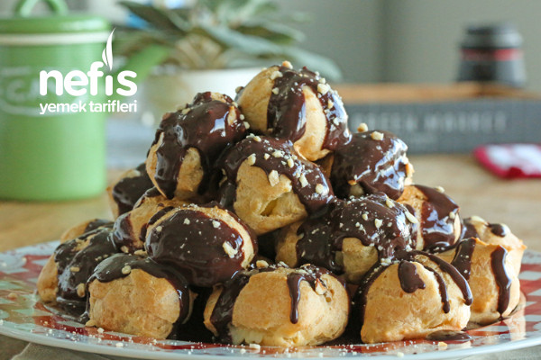

Profiterol yaparken en çok dikkat edilmesi gereken nokta yumurtaların güzel bir şekilde yedirilmesidir. Profiterolde hamurun kabarmasını sağlayan yumurtalardır. Eğer yumurtalarınız az olursa hamurunuz çok fazla kabarmayacaktır.
Bu yüzden kullandığınız yumurtaların küçük olmamasına da dikkat etmelisiniz.
Yumurtaları yedirirken hamurun soğumuş olmasına ve yumurtayı teker teker kırdıktan sonra her birinin güzel bir şekilde yedirilmesine dikkat etmelisiniz.
Hamuru tepsiye dizerken kabarma ihtimalini de göz önünde bulundurmalısınız.
Kremayı doldururken çok sıcak olmamasına ılık olmasına dikkat etmelisiniz.
Krema olarak istediğiniz kremayı kullanabilirsiniz. Ancak çok cıvık olmaması gerekmektedir.
Profiterol Kaç Kalori?
1 top profiterol yaklaşık olarak 107 kaloriye denk gelmektedir.

Kişilik: 8-10 Kişilik Hazırlama Süresi: 20 Dakika Pişirme Süresi: 45 Dakika
Profiterol Tarifi İçin Malzemeler
1 su bardağı su
1 su bardağı un
125 gr tereyağı veya margarin
3 adet yumurta (yumurtalar küçük ise 4 adet)
Profiterol Kreması için:
2,5 su bardağı süt
3 yemek kaşığı un
1,5 çay bardağı şeker
1 adet yumurta
1 paket vanilya
Üzeri İçin:
1 paket hazır çikolata sosu ya da benmari usulü eritilmiş 80 gr bitter çikolata